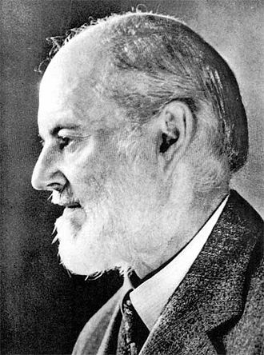
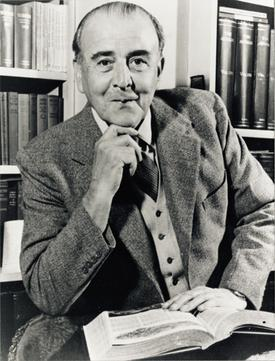
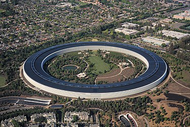

Charles Stewart Rolls FRGS FRMetS MICE (27 August 1877 12 July 1910) was a British motoring and aviation pioneer. With Henry Royce, he co-founded the Rolls-Royce car manufacturing firm. He was the first Briton to be killed in an aeronautical accident with a powered aircraft, when the tail of his Wright Flyer broke off during a flying display in Bournemouth. He was aged 32.
Charles Stewart Rolls FRGS FRMetS MICE (27 August 1877 12 July 1910) was a British motoring and aviation pioneer. With Henry Royce, he co-founded the Rolls-Royce car manufacturing firm. He was the first Briton to be killed in an aeronautical accident with a powered aircraft, when the tail of his Wright Flyer broke off during a flying display in Bournemouth.

HENRY ROYCE
Sir Frederick Henry Royce, 1st Baronet, OBE (27 March 1863 22 April 1933) was an English engineer famous for his designs of car and aeroplane engines with a reputation for reliability and longevity. With Charles Rolls (1877 1910) and Claude Johnson (1864 1926), he founded Rolls-Royce.
Rolls-Royce initially focused on large 40-50 horsepower motor cars, the Silver Ghost and its successors. Royce produced his first aero engine shortly after the outbreak of the First World War and aircraft engines became Rolls-Royce's principal product.
Royce's health broke down in 1911 and he was persuaded to leave his factory in the Midlands at Derby and, taking a team of designers, move to the south of England spending winters in the south of France. He died at his home in Sussex in the spring of 1933.
FOUNDER OF BENTLEY

WO BENTLEY
Walter Owen Bentley, MBE (16 September 1888 13 August 1971[2]) was an English engineer who founded Bentley Motors Limited in London. He was a motorcycle and car racer as a young man. After making a name for himself as a designer of aircraft and automobile engines, Bentley established his own firm in 1919. He built the firm into one of the world's premier luxury and performance auto manufacturers, and led the marque to multiple victories at the 24 Hours of Le Mans. After selling his namesake company to Rolls-Royce Limited in 1931, he was employed as a designer for Lagonda, Aston Martin, and Armstrong Siddeley.
FOUNDER OF APPLE

STEVEN PAUL JOBS
Apple Inc. is an American multinational technology company headquartered in Cupertino, California. As of March 2023, Apple is the world's largest company by market capitalization,[6] and with US$394.3 billion the largest technology company by 2022 revenue.[7] As of June 2022, Apple is the fourth-largest personal computer vendor by unit sales; the largest manufacturing company by revenue; and the second-largest mobile phone manufacturer in the world. It is considered one of the Big Five American information technology companies, alongside Alphabet (parent company of Google), Amazon, Meta (parent company of Facebook), and Microsoft.
Apple was founded as Apple Computer Company on April 1, 1976, by Steve Wozniak, Steve Jobs and Ronald Wayne to develop and sell Wozniak's Apple I personal computer. It was incorporated by Jobs and Wozniak as Apple Computer, Inc. in 1977.
AEROSPACE SCIENTIST
APJ ABDUL KALAM
Avul Pakir Jainulabdeen Abdul Kalam BR (/bdəl kəm/ ⓘ; 15 October 1931 27 July 2015) was an Indian aerospace scientist and statesman who served as the 11th president of India from 2002 to 2007. He was born and raised in Rameswaram, Tamil Nadu and studied physics and aerospace engineering. He spent the next four decades as a scientist and science administrator, mainly at the Defence Research and Development Organisation (DRDO) and Indian Space Research Organisation (ISRO) and was intimately involved in India's civilian space programme and military missile development efforts.[1] He thus came to be known as the Missile Man of India for his work on the development of ballistic missile and launch vehicle technology.[2][3][4] He also played a pivotal organisational, technical, and political role in India's Pokhran-II nuclear tests in 1998, the first since the original nuclear test by India in 1974.
KING OF POP
MICHAEL JACKSON
Michael Joseph Jackson (August 29, 1958 June 25, 2009) was an American singer, songwriter, dancer, and philanthropist. Known as the "King of Pop", he is regarded as one of the most significant cultural figures of the 20th century. During his four-decade career, his contributions to music, dance, and fashion, along with his publicized personal life, made him a global figure in popular culture. Jackson influenced artists across many music genres. Through stage and video performances, he popularized complicated street dance moves such as the moonwalk, which he named, as well as the robot.From the late 1980s, Jackson became a figure of controversy and speculation due to his changing appearance, relationships, behavior, and lifestyle. In 1993, he was accused of sexually abusing the child of a family friend. The lawsuit was settled out of civil court; Jackson was not indicted due to lack of evidence.